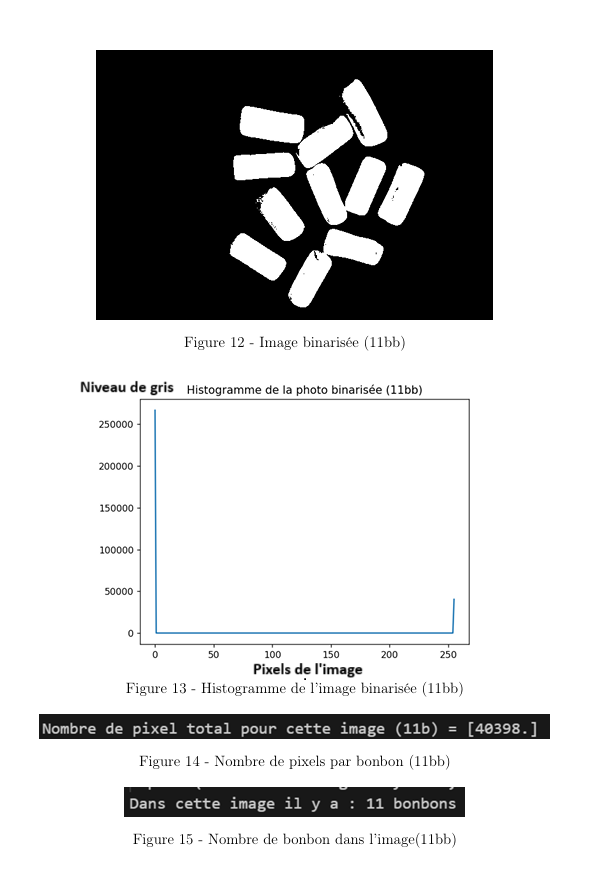

Image Processing and Remote Sensing Applications
Context
This project was carried out during my studies at Seatech and focused on applying image processing and remote sensing techniques to real-world challenges across three domains: industrial object counting, agricultural monitoring, and underwater seabed classification.
Industrial Vision for Object Counting
Goal: Develop an algorithm to detect and count objects in industrial images automatically.
- Loaded and displayed images using OpenCV
- Converted color images to grayscale
- Used histogram analysis for pixel intensity distribution
- Applied binarization for background separation
- Calibrated object area and performed counting on new images 
Remote Sensing for Agricultural Monitoring
Goal: Analyze drone-captured multispectral images to monitor sugar beet crop growth.
- Loaded and visualized six spectral bands
- Created true/false color composites
- Analyzed spectral profiles of vegetation and soil
- Calculated NDVI for vegetation health
- Performed temporal comparisons to evaluate growth
- Computed cultivated area proportions over time


Underwater Mapping using Submarine Images
Goal: Map the seabed by classifying underwater images using spectral and supervised learning techniques.
- Analyzed underwater spectral bands
- Visualized band combinations for interpretation
- Applied Euclidean Distance and Spectral Angle Mapper (SAM)
- Compared classification results for accuracy

Results & Learning Outcomes
This project allowed me to explore and apply advanced image processing and remote sensing techniques to solve domain-specific problems. I gained hands-on experience using Python, OpenCV, and data visualization libraries. From counting objects in factory scenes to mapping agricultural plots and marine habitats, this work demonstrated how image-based analysis supports innovation across industrial, agricultural, and environmental sectors.
← Back to Projects